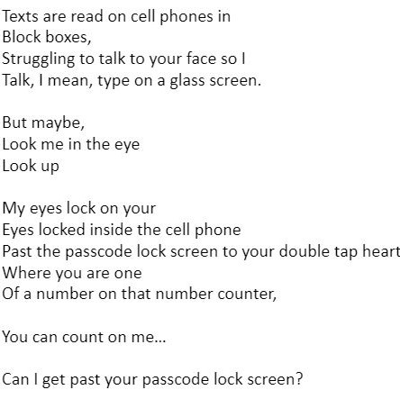
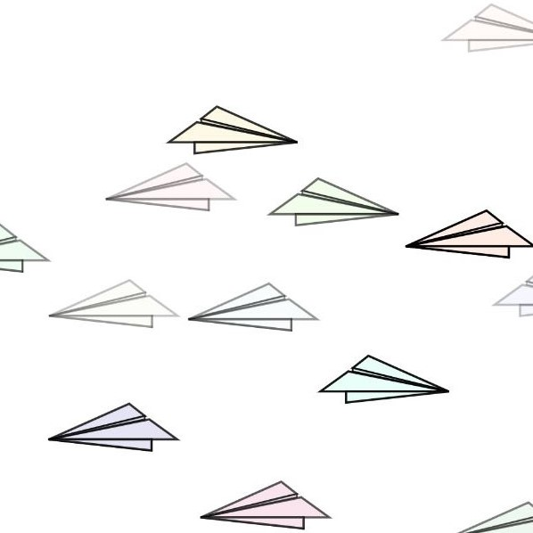
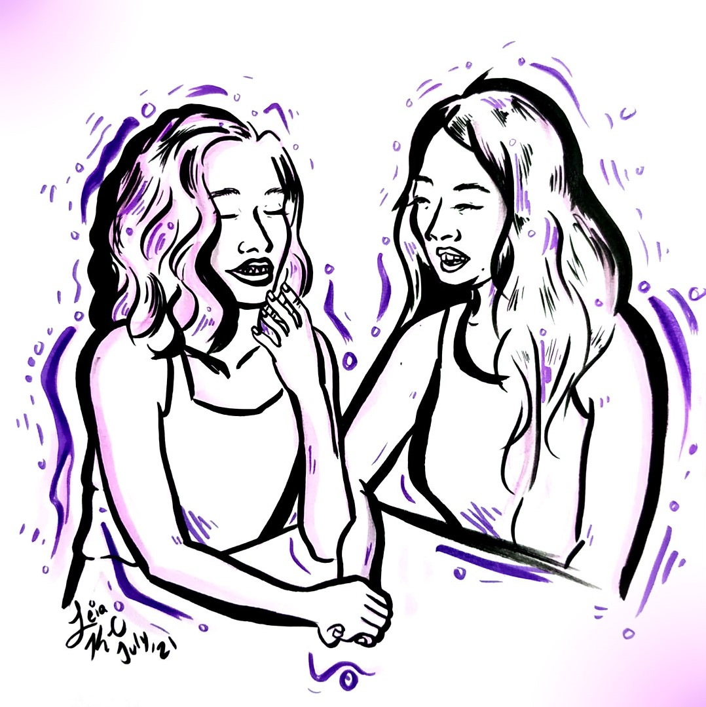
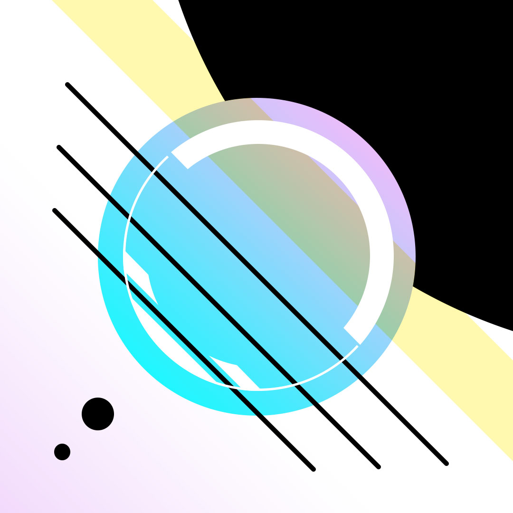

[Project Title] is a collection of interactive poetry – it combines code, words, and art to create an interactive experience. [Project Title] exists on the internet, currently on GitHub Pages. The viewer scrolls through the website to reveal the creative work. Poetry is brought to life with illustrated visuals and creative code, making for a more immersive storytelling experience. The artwork is meant to evoke emotion through storytelling and atmosphere, delivering a key lesson within the writing. Every interactive poem is unique.
Purpose
The purpose of [Project Title] is to share meaningful messages through various intertwined artforms. The words speak to the themes of the work while the visual art, motion, and creative code embellishes the point and drives it home. Additionally, all of these media work together to create mood and atmosphere.
Background
This story was inspired by the interactive story “The Boat” from SBS. In this experience, the viewer scrolls through the story of text which has integrated elements of illustrations, sounds, and motion to contribute to the storytelling. This project inspired me – I was amazed! I did not know you could move elements on webpages. It was an immersive experience. I found myself periodically coming back to “The Boat” and sharing it with others, realizing that I loved it and I would like to create something similar.
By creating this project, I experienced creative growth as I challenged my creative code skills, built upon new motion design techniques, renewed my poetic writings, and grew my visual art practice. This project speaks to my past by showcasing visuals and poetry and integrates my newfound knowledge by incorporating movement with motion design, interaction, and user experience. The whole project is sewn together with code, making parts work together to enhance the overall experience for the viewer. I love mixing media to create a multidimensional experience.
Multimedia: About Each Medium
Poetry, the Written Word

With my poetic practice, I aim to write soulfully and authentically, capturing caveats of a feeling or topic. I love using metaphors and other comparisons to connect two concepts, further an idea, and push the thinking of the reader. I use imagery to describe a scene, making it come alive in the mind of the reader. My creative writing process involves “dumping” all of my thoughts and writing onto the paper, then leaving it for a good while, and returning to it to comb through what to use and not use. I edit: moving, adding, removing, and altering my words. I repeat this process of the craft until I am satisfied and proud of my work.
Creative Code

Much of my creative code practice has been exploratory, tinkering with code, finding what works and what I like. Although, sometimes, I begin with a vision of what I’d like the code to do: an interaction, movement, or outcome, etc. I prototype, making a scrape version of my bigger vision. I’ll fiddle with the code until it works, and ask for help from others if I need it. I like creating work with interaction since I feel like it makes an experience more fun and engaging. What a joy it is to click a thing!
Illustration

My ink illustrations are typically vibrant in colour and high contrast with varying lines thicknesses. Others have remarked how I include words into the drawing. I like using ink for the solid colours and variation in application methods on the paper, such as cross-hatching and stippling. It has a certain permanence and “no-going-back” feeling with not being able to erase the mark once it’s on the paper. At times, I’ll sketch and plan my illustration beforehand; other times, I’ll freehand it. When mistakes occur, I draw over it and build upon it, masking the mark and making as if no mistake ever happened. I’ve developed this process as I’ve grown up; drawing is where I started with art, with a pencil and paper.
Digital Art

I got my foundation of digital art from drawing – lines, circles, etc. When I began drawing with a computer, it was like magic! The lines were crisp and could be adjusted. Gradients were automatic, I didn’t have to layer my coloured pencil markings across a page. Vibrant, adjustable, and transferable are key words with how I see digital art. My process can begin with importing a hand drawn illustration and cleaning it up, or imagining a visual and creating a vector of it straight on the computer. I appreciate the versatility of digital art.